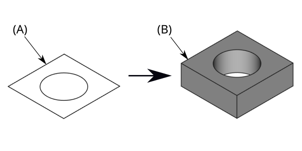

PartDesign Pad/pl
|
|
| Lokalizacja w menu |
|---|
| Projekt Części → Utwórz cechę przez dodanie → Wyciągnij |
| Środowisko pracy |
| Projekt Części |
| Domyślny skrót |
| brak |
| Wprowadzono w wersji |
| - |
| Zobacz także |
| Kieszeń |
Opis
Narzędzie  Wyciągnij tworzy bryłę w aktywnej Zawartości poprzez wyciągnięcie szkicu, obiektu 2D lub jednej bądź kilku ścian wzdłuż prostej ścieżki. Jego kształt jest łączony z istniejącą bryłą, jeśli wcześniej utworzono inne elementy.
Wyciągnij tworzy bryłę w aktywnej Zawartości poprzez wyciągnięcie szkicu, obiektu 2D lub jednej bądź kilku ścian wzdłuż prostej ścieżki. Jego kształt jest łączony z istniejącą bryłą, jeśli wcześniej utworzono inne elementy.


Szkic (A) jest pokazany po lewej stronie; wynik końcowy działania operacji wyciągnięcia (B) prezentowany jest po prawej stronie
Użycie
- Wybierz pojedynczy szkic lub podobny obiekt 2D albo jedną lub więcej ścian z pojedynczego szkicu lub innego obiektu albo z samego obiektu Body.
- Istnieje kilka sposobów wywołania narzędzia:
- Naciśnij przycisk
 Wyciągnij.
Wyciągnij. - Wybierz z menu opcję Projekt Części → Cechy addytywne → Wyciągnij.
- Naciśnij przycisk
- Otworzy się panel zadań.
- Ustaw parametry, zobacz Opcje poniżej. dostępne w wersji 1.1: Jeśli zaznaczona jest opcja Pokaż interaktywne manipulatory podczas edycji cech w preferencjach (domyślnie), parametry długości i kąta pochylenia można regulować za pomocą interaktywnych uchwytów w Widoku 3D.
- Naciśnij przycisk OK, aby zamknąć panel zadań i zakończyć działanie narzędzia.
- Cecha Wyciągnięcia pojawi się pod aktywnym obiektem Zawartości.
Edycja
Obiekt Wyciągnięcia można edytować po jego utworzeniu na dwa sposoby:
- Klikając go dwukrotnie w Widoku drzewa lub klikając prawym przyciskiem myszy i wybierając w menu kontekstowym opcję Edytuj Wyciągnięcie; otwiera to panel zadań oraz (dostępne w wersji 1.1) interaktywne uchwyty (jeśli są włączone).
- Za pośrednictwem Widoku właściwości.
Opcje
Panel zadań oferuje następujące ustawieniaː

Początek
Ustawia, gdzie zaczyna się wyciągnięcie. Domyślnie wyciągnięcie zaczyna się na szkicu lub ścianie używanej jako jego profil.
- Płaszczyzna profilu (domyślnie): wyciągnięcie zaczyna się bezpośrednio na płaszczyźnie szkicu lub ścianie profilu.
- Odsunięcie: wyciągnięcie zaczyna się w odległości numerycznej od profilu, wprowadzonej w polu Odsunięcie.
- Odniesienie: wyciągnięcie zaczyna się na ścianie, płaszczyźnie odniesienia lub szkicu wybranym z pomocą przycisku {{|Wybierz odniesienie}}.
Jest to przydatne do tworzenia wielu cech z pojedynczego szkicu głównego bez potrzeby osobnych płaszczyzn odsunięcia dla każdego szkicu.
Kierunek
dostępne w wersji 1.1 (jako Tryb)
Ustawia kierunek lub kierunki wyciągnięcia:
- Jednostronnie: wyciągnięcie idzie w jedną stronę szkicu lub ściany.
- Dwustronnie: wyciągnięcie idzie w dwie strony szkicu lub ściany. Dwa menu podrzędne (Strona 1 i Strona 2) pojawiają się, żeby zdefiniować wyciągnięcie dla każdej strony.
- Symetrycznie: wyciągnięcie jest symetryczne względem oryginalnego szkicu lub ściany.
Typ
Dla Strony 1 oraz Strony 2, jeśli dotyczy.
Oferuje pięć sposobów określenia długości wyciągnięcia:
- Wymiar: wpisz wartość liczbową dla opcji Długość wyciągnięcia. Przy opcji Kierunek ustawionej na Symetrycznie wyciągnięcie rozciągnie się o połowę podanej długości po obu stronach szkicu lub ściany.
- Do ostatniego: wyciągnięcie rozciągnie się aż do ostatniej ściany podpory napotkanej na jego drodze. Jeśli nie ma podpory, pojawi się komunikat o błędzie.
- Do pierwszego: wyciągnięcie rozciągnie się aż do pierwszej ściany podpory napotkanej na jego drodze. Jeśli nie ma podpory, pojawi się komunikat o błędzie.
- Do ściany: wyciągnięcie rozciągnie się aż do ściany. Naciśnij przycisk Wybierz ścianę i wybierz ścianę lub płaszczyznę odniesienia płaszczyznę konstrukcyjną z obiektu Zawartości.
- Do kształtu: dostępne w wersji 1.0: wyciągnięcie rozciągnie się aż do wybranego kształtu. Opcjonalnie naciśnij przycisk Wybierz kształt i wybierz kształt. Pozostaw pole wyboru Wybierz wszystkie ściany włączone lub je wyłącz, naciśnij przycisk Wybierz i wybierz ściany, do których ma zostać utworzone wyciągnięcie.
Odsunięcie od ściany
Dla Strony 1 oraz Strony 2, jeśli dotyczy.
Odsunięcie od powierzchni, na której ma się kończyć wyciągnięcie. Opcja ta jest dostępna tylko gdy Typ (dla tej samej strony) jest ustawiony na Do ostatniego, Do pierwszego lub Do ściany.
Długość
Dla Strony 1 oraz Strony 2, jeśli dotyczy.
Określa długość wyciągnięcia. Opcja ta jest dostępna tylko wtedy, gdy Typ (dla tej samej strony) to Wymiar.
Kąt zwężenia
Dla Strony 1 oraz Strony 2, jeśli dotyczy.
Zwęża wyciągnięcie w kierunku wytłaczania o podany kąt. Dodatni kąt oznacza, że zewnętrzna krawędź bryły staje się szersza. Opcja ta jest dostępna tylko, gdy Typ (dla tej samej strony) jest ustawiony na Wymiar.
W kierunku przeciwnym
Opcja Reversed odwraca kierunek wyciągnięcia.
Odwraca kierunek wyciągnięcia.
Kierunek / krawędź
Można wybrać kierunek wyciągania:
- Normalna szkicu lub Normalna ściany: Szkic lub powierzchnia jest wyciągana w kierunku swojej normalnej. Jeśli wybrano kilka ścian do wyciągnięcia, użyta zostanie normalna pierwszego z nich.
- Wybierz odniesienie…: Szkic lub powierzchnia jest wyciągana w kierunku prostej krawędzi lub linii odniesienia wybranej z bryły.
- Kierunek niestandardowy: Szkic lub powierzchnia jest wyciągana w kierunku określonego wektora.
Długość wzdłuż wektora normalnego szkicu
Odznacz tę opcję, aby mierzyć wzdłuż określonego kierunku. Ta opcja jest niedostępna, jeśli opcja Kierunek/krawędź ma wartość Normalna szkicu lub Normalna ściany.
Przelicz ponownie przy zmianie
Ta opcja powinna być zaznaczona, jeśli zaznaczona jest opcja Pokaż wynik końcowy lub Pokaż nakładkę podglądu.
Pokaż wynik końcowy
Jeśli opcja jest zaznaczona, wyświetlany jest łączny wynik poprzednich cech oraz bieżącej operacji.
Pokaż nakładkę podglądu
Jeśli opcja jest zaznaczona, wynik bieżącej operacji jest wyświetlany jako nakładka.
Uwagi
- Szkice zawierające krzywe złozone często nie mogą być prawidłowo zwężane. Jest to ograniczenie jądra OpenCASCADE, z którego korzysta FreeCAD.
- W przypadku większych kątów zwężanie nie powiedzie się, jeśli powierzchnia końcowa będzie miała mniej krawędzi niż powierzchnia początkowa / szkic.
- Algorytmy używane w Do pierwszego i Do ostatniego:
- utwórz linię przechodzącą przez środek ciężkości szkicu,
- znajdź wszystkie powierzchnie podparcia przecięte przez tę linię,
- wybierz ścianę, na której punkt przecięcia znajduje się najbliżej / najdalej od szkicu.
- Oznacza to, że znaleziona ściana może nie zawsze być tą, której się spodziewałeś. Jeśli natkniesz się na ten problem, zamiast tego użyj odwrotnie do ściany i wybierz ścianę, którą chcesz.
- W bardzo szczególnym przypadku wytłaczania do powierzchni wklęsłych, gdzie szkic jest większy niż ta powierzchnia, wytłoczenie nie powiedzie się. Jest to nierozwiązany błąd.
Właściwości
Zapoznaj się również z informacjami na stronie: Widok właściwości.
Obiekt Wyciągnięcie środowiska Projekt Części wywodzi się z obiektu Część: Cecha i dziedziczy wszystkie jego właściwości. Posiada on również następujące dodatkowe właściwości:
Dane
Kompatybilność
- DANE (Hidden)Użyj starszego kierunku pochylenia (
Bool): dostępne w wersji 26.3
Wyciągnięcie
- DANETyp strony (
Enumeration):Jednostronnie,DwustronnielubSymetrycznie. dostępne w wersji 1.1 - DANEUżyj wektora użytkownika (
Bool): Jeśli zaznaczone, kierunek wyciągnięcia opiera się na wektorze DANEKierunek zamiast na DANEOś odniesienia. - DANEKierunek (
Vector): Wektor kierunku wyciągnięcia, jeśli używana jest opcja DANEUżyj wektora użytkownika. - DANEOś odniesienia (
LinkSub): Normalna szkicu, krawędź lub linia odniesienia z obiektu Zawartości. - DANEWzdłuż normalnej szkicu (
Bool): Jeśli zaznaczone, długość wyciągnięcia jest mierzona wzdłuż normalnej szkicu. W przeciwnym razie jest mierzona wzdłuż DANEKierunek lub DANEOś odniesienia.
Projekt Części
- DANE (Hidden)Operacja (
Enumeration): Nieużywane. dostępne w wersji 26.3 - DANEUdoskonal: Jeśli zaznaczone, czyści resztkowe krawędzie pozostawione po operacji. Ta właściwość jest początkowo ustawiana zgodnie z ustawieniami użytkownika (znajduje się w Preferencje → Projekt Części → Ogólne → Ustawienia modelu).
- DANERozmyta tolerancja (
FloatConstraint): dostępne w wersji 1.1
Strona1
- DANEType (
Enumeration):Length,UpToLast,UpToFirst,UpToFaceorUpToShape. Do not use?TwoLengths. Defines how the pad will end. - DANELength (
Length): The length of the pad. - DANEUp To Face (
LinkSub): Face where the pad will end. - DANEUp To Shape (
LinkSubList): Faces or shape(s) where the pad will end. - DANEOffset (
Length): Offset from the face where the pad will end. This is only taken into account if the DANEType optionUpToLast,UpToFirstorUpToFaceis used. - DANETaper Angle (
Angle): Taper angle of the extrusion.
Side2
The properties in this group are only editable if DANESide Type is Two sides. See the Side1 group for more information about the properties.
- DANEType2 (
Enumeration): introduced in 1.1 - DANELength2 (
Length) - DANEUp To Face2 (
LinkSub): introduced in 1.1 - DANEUp To Shape2 (
LinkSubList): introduced in 1.1 - DANEOffset2 (
Length): introduced in 1.1 - DANETaper Angle2 (
Angle)
Szkic bazowy
- DANEProfil (
LinkSub) - DANEPłaszczyzna pośrednia (
Bool) - DANEOdwrócony (
Bool) - DANEZezwalaj na wiele ścian (
Bool)
Początek
- DANETyp początku (
Enumeration): ustawia, jak definiowany jest początek wyciągnięcia (Płaszczyzna profilu, Odsunięcie, Odniesienie), zobacz Opcje. dostępne w wersji 26.3 - DANEOdsunięcie początku (
Length): odległość między profilem a początkiem wyciągnięcia. Używane tylko, jeśli DANETyp początku to Odsunięcie. dostępne w wersji 26.3 - DANEOdniesienie początku (
LinkSub): ściana, płaszczyzna lub szkic, od którego zaczyna się wyciągnięcie. Używane tylko, jeśli DANETyp początku to Odniesienie. dostępne w wersji 26.3
- Narzędzia struktury: Część, Grupa
- Narzędzia wspomagające: Utwórz zawartość, Nowy szkic, Edycja szkicu, Mapuj szkic na ścianę, Sprawdź poprawność szkicu , Sprawdź geometrię, Łącznik kształtów podrzędnych, Utwórz klona, Płaszczyzna odniesienia, Linia odniesienia, Punkt odniesienia, Lokalny układ współrzędnych
- Narzędzia do modelowania
- Narzędzia addytywne: Wyciągnięcie, Wyciągnij przez obrót, Wyciągnięcie przez profile, Wyciągnięcie po ścieżce, Addytywna helisa, Addytywny sześcian, Addytywny walec,Addytywna sfera, Addytywny stożek, Addytywna elipsoida, Addytywny torus, Addytywny graniastosłup, Addytywny klin
- Narzędzia subtraktywne: Kieszeń, Otwór, Rowek, Subtraktywne wyciągnięcie przez profile, Subtraktywne wyciągnięcie po ścieżce, Subtraktywna helisa, Subtraktywny sześcian, Subtraktywny walec, Subtraktywna sfera, Subtraktywny stożek, Subtraktywna elipsoida, Subtraktywny torus,Subtraktywny graniastosłup, Subtraktywny klin
- Narzędzia operacji logicznych Funkcje logiczne
- Narzędzia ulepszające: Zaokrąglenie, Fazka, Pochylenie ścian, Grubość
- Narzędzia do transformacji: Odbicie lustrzane, Szyk liniowy, Szyk kołowy, Transformacja wielokrotna, Skaluj
- Dodatki: Przenieś, Koło łańcuchowe, Koło zębate ewolwentowe, Kreator projektowania wału
- Narzędzia menu kontekstowego: Ustaw czubek, Przenieś cechę, Przenieś cechę w drzewie, Wygląd zewnętrzny, Ustaw kolor
- Preferencje: Ustawienia, Dostrajanie parametrów
- Jak zacząć
- Instalacja: Pobieranie programu, Windows, Linux, Mac, Dodatkowych komponentów, Docker, AppImage, Ubuntu Snap
- Podstawy: Informacje na temat FreeCAD, Interfejs użytkownika, Profil nawigacji myszką, Metody wyboru, Nazwa obiektu, Edytor ustawień, Środowiska pracy, Struktura dokumentu, Właściwości, Pomóż w rozwoju FreeCAD, Dotacje
- Pomoc: Poradniki, Wideo poradniki
- Środowiska pracy: Strona Startowa, Złożenie, BIM, CAM, Rysunek Roboczy, MES, Inspekcja, Siatka, OpenSCAD, Część, Projekt Części, Punkty, Inżynieria Wsteczna, Robot, Szkicownik, Arkusz Kalkulacyjny, Powierzchnia 3D, Rysunek Techniczny, Test Framework